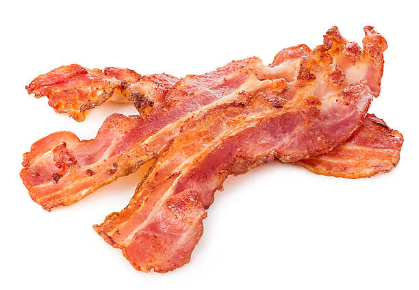

Bacon

A rustic salad for one - contrast peas and caramelised onion with salty, streaky bacon and mustard dressing
Ingredients
- 1 red onion, cut into 8 wedges, root left intact
- 2 tbsp olive oil, plus extra for drizzling (optional)
- handful of peas (fresh or frozen)
- 1 tsp sherry vinegar
- 1 tsp Dijon mustard
- 2 slices smoked streaky bacon
- 1 slice of bread, cut into cubes
- 1 Baby Gem lettuce, leaves torn
Recipe
- Heat oven to 220C/200C fan/gas 7. Arrange the onion wedges on one side of a baking tray. Drizzle with ½ tbsp of the olive oil and season. Put in the oven and roast for 15 mins.
- Meanwhile, cook the peas in boiling water for 2 mins, drain and rinse in very cold water. Set aside.
- Make the dressing by mixing together another ½ tbsp of the oil, the vinegar, mustard and seasoning. Turn the onions, and put the bacon slices and bread next to them on the baking tray. Drizzle the remaining oil over the bread. Return the tray to the oven for 12 mins more, until the bacon and bread are golden.
- Put the lettuce and peas in a bowl, add the dressing and toss to combine. Arrange the onion and bread on top. Break up the bacon slightly and scatter over. Drizzle with a little more olive oil, if you like, and eat straight away.